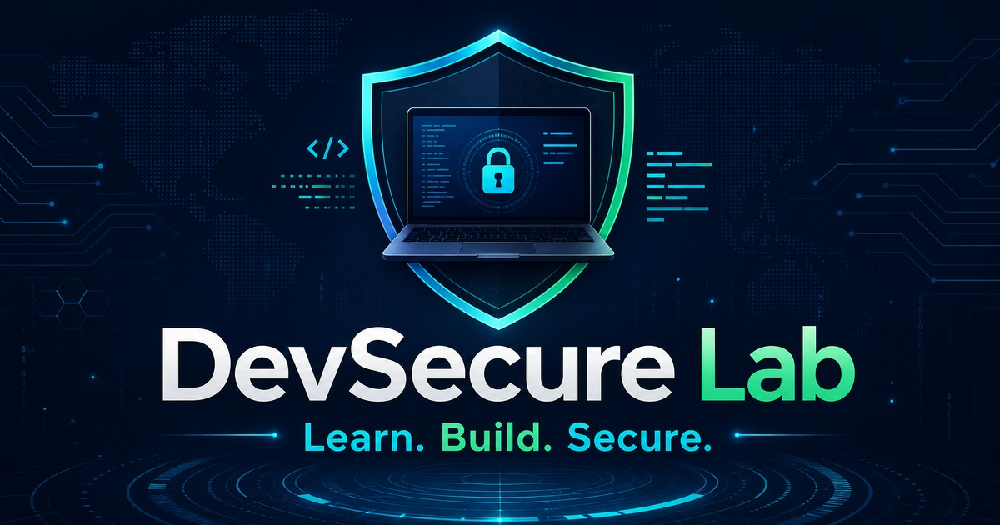
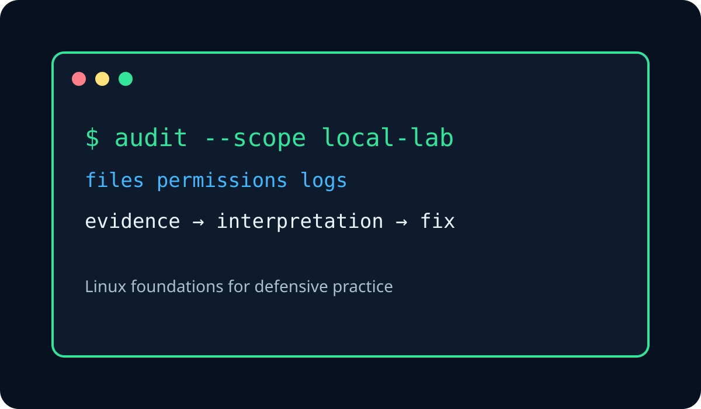
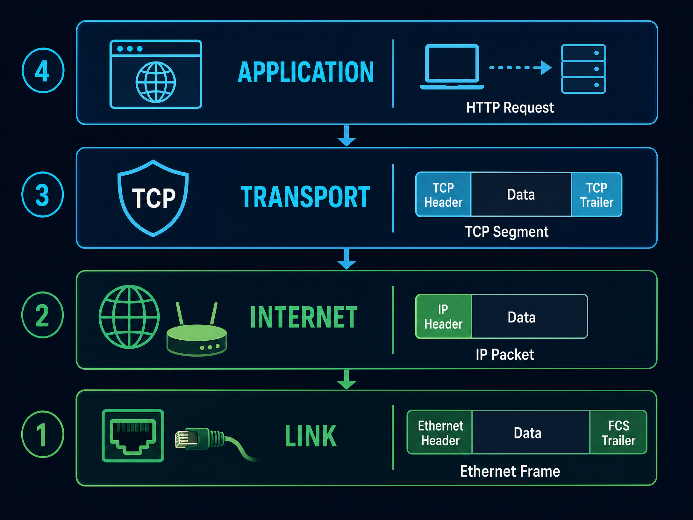
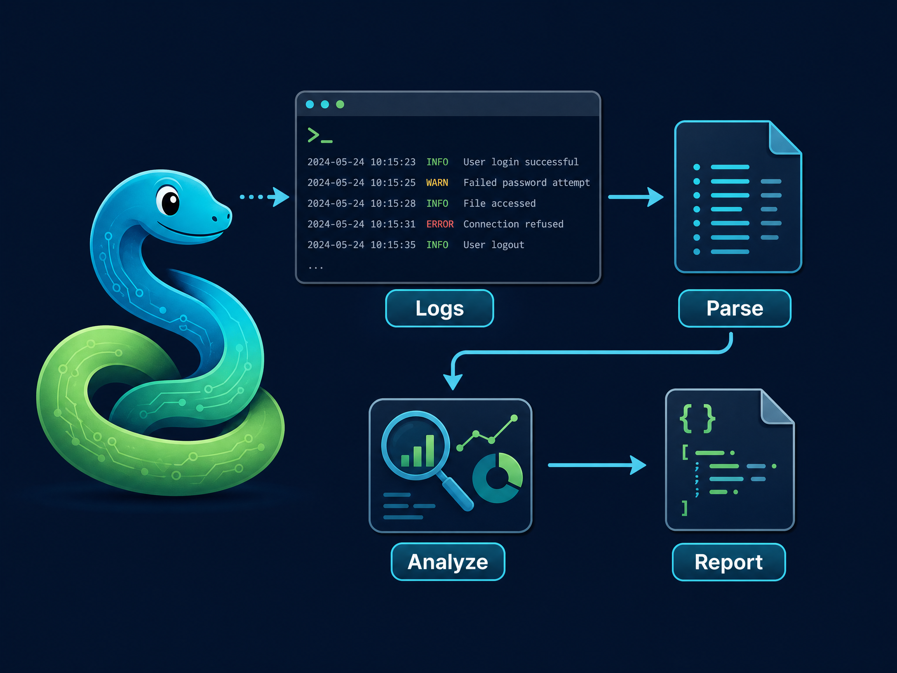
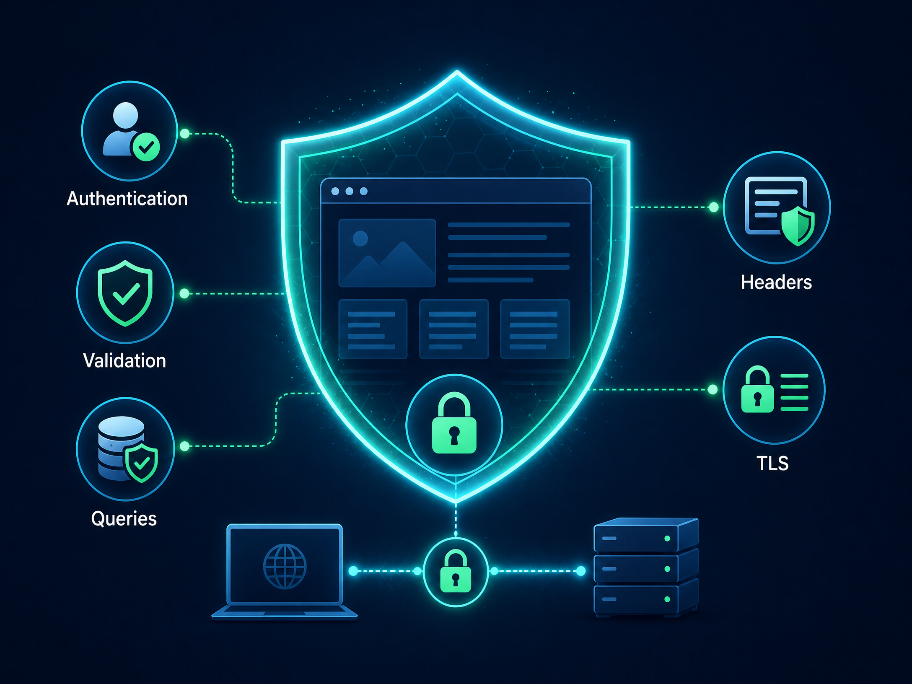
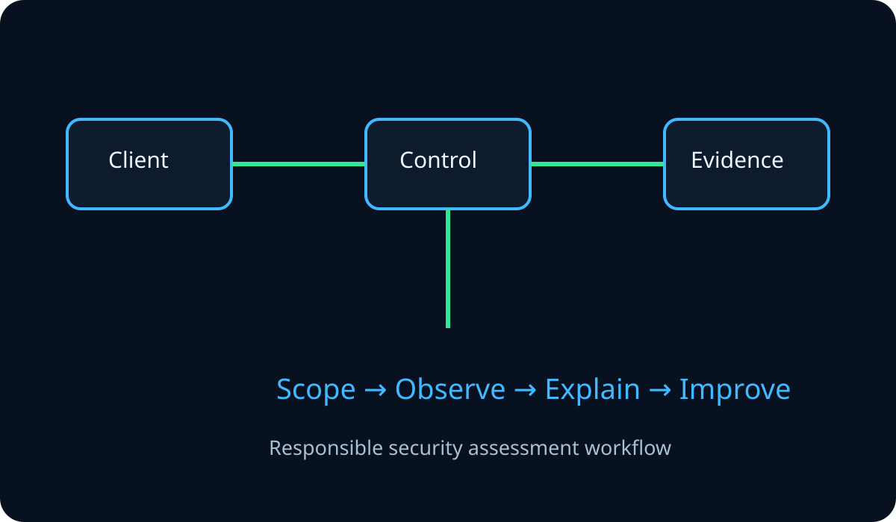

Linux Basics & Terminal
Build confidence with filesystems, permissions, processes, logs, networking commands and defensive shell automation.
0/8 modules · 0%
DevSecure Lab is a structured learning platform for students who want practical foundations, safe exercises, useful projects and professional communication.






Learning visual 1 of 6
Your progress is saved locally in this browser.
Follow the path or begin with the track that matches your current goal.
Build confidence with filesystems, permissions, processes, logs, networking commands and defensive shell automation.
Understand IP architecture, network models, DNS, transport protocols, routing, HTTP and safe troubleshooting.
Use Python to read data, handle errors, parse logs and build safe defensive automation.
Learn secure web architecture, authentication, input handling, browser controls and OWASP-aligned defense.
Understand authorized assessment methodology, scoping, evidence, reporting and defensive validation in safe labs.
Build practical English communication skills for cybersecurity vocabulary, reports, documentation and professional conversations.
Prerequisites → modules → assessment → project.
Every module connects explanation to a controlled practice task, multiple knowledge checks, a challenge and a reflection step.
See guided projects →Use only your own systems, disposable labs or written-authorized targets. No lesson authorizes testing an external target.
Read Responsible Use →